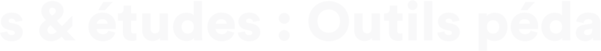

Conseils & études : Outils pédagogiques
Le Challenge
Créé en 1990, Milan Presse est le 8ème éditeur sur le marché de l’édition jeunesse en France, et compte pas moins de
2000 titres actifs avec 2 millions d’exemplaires vendus par an. Milan presse compte environ 300 collaborateurs.
La Directrice éditoriale Eveil-Lecture, a souhaité un accompagnement sur la mise en valeur des meilleurs leviers
permettant une interaction épanouie entre l’enfant et les parents.
L’objectif principal était de délivrer un accompagnement scientifique et stratégique auprès des équipes internes sur la
compréhension des compétences des bébés à travers leurs illustrations dans un format inédit et original.
Nos solutions
Audit & Compréhension des enjeux et des spécificités de l’Usine Michelin de Cholet
Nos équipes d’experts scientifiques interrogent et analyses l’ensemble des éléments explicites et implicites afin de
pouvoir faire immerger les grandes problématiques à traiter par ordre de priorité.
Création d’un programme d’accompagnement à la transition sur mesure
Nos experts scientifiques réalisent ensuite avec rigueur des programmes adaptés aux différents corps de l’Usine
(Ouvrier chaîne de production, Manager, Top Manager). L’ensemble des programmes étant réalisée avec une
approche impactante et méthodique afin de pouvoir relever et analyser les effets.
Guides pratiques & Suivi collectif et individuel
A l’issue de ce programme les collaborateurs ont pu prendre conscience de leurs avancées individuelles et collectives
grâce nos outils de suivi. Ils disposent encore aujourd'hui de guides pratiques et peuvent sur demande accéder à de
nouveaux leviers opérationnels ou mettre à jour leurs connaissances.
Les premiers résultats
Magazine petite enfance
Acquisition du langage : le cerveau à la loupe
Comment les bébés apprennent ? Cette grande question est coeur de notre travail avec les éditions Milan presse afin d’accompagner efficacement les auteurs de différents outils pédagogiques à destination des enfants . Nawal ABBOUB, Directrice scientifique @Rising up et docteure en neurosciences cognitives a d’ailleurs consacré de nombreuses années à la compréhension de ces mécanismes complexes afin d’en déceler ces secrets.
Dans cette interview Dr Nawal Abboub livre des clefs de compréhénsion en s’appuyant sur ses recherches mais également les dernières avancées en neurosciences.